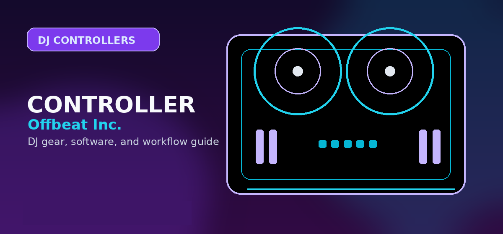

Numark Mixtrack Pro FX vs Pioneer DDJ-200: Budget DJ Controller Comparison
Numark Mixtrack Pro FX vs Pioneer DDJ-200: features, latency, software, and value for beginner and budget DJs in 2026.

The sub-$300 DJ controller market has consolidated into two dominant options: Numark's Mixtrack Pro FX and Pioneer's entry-level DDJ-200.
Feature Comparison
| Feature | Numark Mixtrack Pro FX | Pioneer DDJ-200 |
|---|---|---|
| Price | $249–$299 | $199–$249 |
| Channels | 2 | 2 |
| FX Section | Built-in effects section | Software-based effects only |
| Jog wheels | LED-lit, capacitive | LED-lit, capacitive |
| Software Included | Serato DJ Lite | rekordbox |
| Best For | Electronic/edits focused | Club/scratch focused |
Verdict
- Choose the Numark Mixtrack Pro FX if you want more physical controls, a built-in effects section, and a Serato-first beginner setup.
- Choose the Pioneer DDJ-200 if you want the lowest entry price and a rekordbox workflow that points toward Pioneer club hardware.
- The better beginner controller depends less on raw specs and more on which software ecosystem you plan to learn first.
Which beginner controller is safer?
The Mixtrack Pro FX is the better hands-on controller for learning because it gives beginners a more complete physical layout, audio output, performance pads, and dedicated controls. The DDJ-200 is lighter and more compact, but it is more limited as a long-term practice surface.
Upgrade path
If you plan to play parties or record practice mixes seriously, the better upgrade is often skipping the lowest tier and moving to a DDJ-FLX4, Hercules Inpulse 500, or another controller with stronger audio connectivity and software support.
Beginner buying mistake to avoid
Do not buy only for the logo. A beginner controller should teach the actions you will repeat every practice session: cueing, nudging, EQing, filtering, looping, and controlling levels. If a controller makes those actions awkward, the brand name will not fix the learning experience.
Also check the audio path. A controller with useful outputs and headphone cueing will stay useful longer than an ultra-compact unit that requires workarounds.
Practical checklist before you decide
Use this page as one part of the decision, not the whole decision. Confirm the current price, software compatibility, operating-system support, and whether the option still fits the way you actually practice or perform.
- Fit: choose the option that matches your current workflow and the setup you expect to use for the next year.
- Compatibility: verify exact hardware, app, subscription, and file-format requirements before buying or switching.
- Reliability: avoid workflows that depend on one fragile adapter, one unstable app version, or an internet connection with no backup.
- Upgrade path: favor tools that can grow with you instead of forcing another purchase as soon as you start recording mixes or playing longer sets.
How to use this guide in a real DJ setup
Before changing gear, software, or workflow, connect the recommendation to an actual use case: home practice, recorded mixes, streaming, mobile events, club preparation, or production crossover. A choice that looks best on paper can still be wrong if it adds setup friction or does not match the way you will play.
The safest workflow is to test the setup exactly as you will use it, then document the cable path, software version, library source, and backup plan. That prevents most of the avoidable failures that happen when DJs buy the right-looking tool but never validate the whole system.
Official product and support pages
Use these official pages to confirm current specifications, software compatibility, and support details before buying.
Frequently Asked Questions
Numark Mixtrack Pro FX vs Pioneer DDJ-200 — which is better for beginners?
The Numark Mixtrack Pro FX is better for beginners who want more hands-on FX controls. The DDJ-200 is better for beginners who want to build toward rekordbox and Pioneer-style club workflows.
Does the Numark Mixtrack Pro FX work with rekordbox?
No. The Mixtrack Pro FX is officially mapped for Serato DJ Lite. You can map it manually in rekordbox or Traktor, but official support is Serato-focused.
What should I check before buying this DJ controller?
Confirm software compatibility, audio outputs, headphone cueing, driver support, and whether the controller fits your real practice or gig setup.
Is this controller category good for beginners?
It can be, but beginners should prioritize reliable software support, simple routing, and controls that teach transferable DJ habits before paying for advanced performance features.
Should I buy new or used?
Buy used only when the seller can confirm working jog wheels, faders, outputs, USB connection, and included software/license status. Otherwise, new gear is safer for first-time buyers.